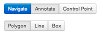
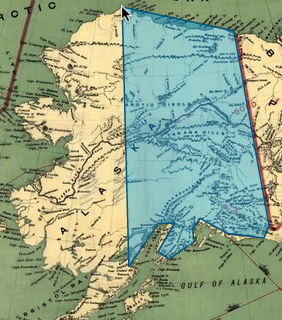
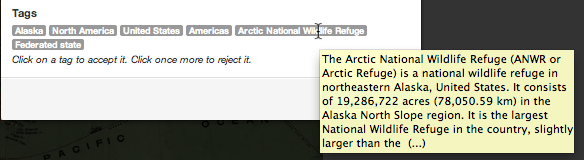
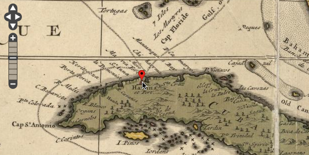
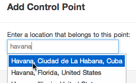
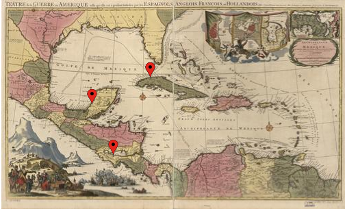

Annotation
Annotating historical maps is made easy through the use of OpenLayers. Annotate by creating either a polygon, line or box region on the map.

A window will pop up, prompting you to type a description of the region, as well as displaying certain tags that are retrieved through Wikipedia.

You can either accept or deny these tags. Accepted tags will then be linked to the notation and the map, thus allowing for easy retrieval through searching.
GeoReferencing
There are control points that may be added to each map,

these points reference a specific location on the map which corresponds to a current day location.

After three of these points are added to the map, georeferencing can be implemented. The app itself will then be able to prompt the user with more locations as well as generate intelligent tag choices for annotations.

What is maphub?
Maphub is a Web portal prototype for georeferencing and annotating digitized, high-resolution historic maps. All annotations will be represented in the Open Annotation Collaboration Data Model and become Web resources that can be accessed by various clients simply by dereferencing HTTP URIs. The portal will be bootstrapped with approximately 6000 public domain maps taken from the Library of Congress Historic Map division. A first beta-version will be released for interested test users in early summer 2012.
Technical Details
Currently we are working on the OAC specification for map annotations. We are also building the portal using Ruby on Rails reusing components and algorithms we previously developed for the YUMA annotation framework. This includes component that allow us to link user-contributed annotations with data from other publicly available datasources, such as DBpedia and GeoNames.